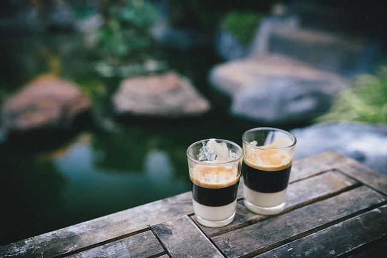

Napary przelewowe:
- kawa filtrowana (filtr metalowy, papierowy lub inny)
- kawa filtrowana na bazie french press (ang. praska francuska)
- cold brew lub cold water extraction (ang. zimny napar) - napar uzyskano przez powolną (12-24 godziny) ekstrakcję zimną wodą
- flash brew (ang. szybki napar) - napar filtrowany, w którym używa się niewielkiej ilości gorącej wody do zaparzenia; przefiltrowany napar kapie wprost na lód schładzając go i rozcieńczając
Kawy gotowane:
- kawa zaparzana w perkolatorze
- kawa turecka
- kawa z makinetki
Makinetka, zwana kawiarką lub moką, to ciśnieniowe urządzenie do zaparzania kawy, które składa się z trzech części. W dolnej znajduje się woda, na górze zbiornik na zaparzoną kawę, a pomiędzy zbiornik (lejek) na zmieloną kawę. Nad pojemnikiem na kawę znajduje się filtr, zamontowany w zbiorniku na napar. Podgrzewana woda w dolnym zbiorniku osiągając odpowiednią temperaturę i ciśnienie przesącza się przez lejek z kawą do zbiornika. Podobnie zaparza się kawę próżniową, ale woda i gotowy napar są w dolnym zbiorniku.
Kawa próżniowa
Urządzenie do zaparzenia kawy składa się z dwóch części, jedna nad drugą. W dolnej części umieszcza się wodę, które pod wpływem ogrzewania przelewa się do górnej, gdzie znajduje się zmielona kawa. Powstaje napar, który następnie, gdy w dolnym naczyniu nie ma już wypychającego ciśnienia, pod wpływem grawitacji wraca do dolnego naczynia. Podobny sposób zaparzania jest w makinetce, ale tam napar zbiera się w górnym zbiorniku, a kawa jest w lejku pomiędzy dwoma pozostałymi częściami. Espresso i napoje na jego bazie:
- espresso
- latte macchiato
- flat white
- cappuccino
- mocha
- caffe latte
- espresso macchiato
Napary z kaw typu instant (rozpuszczalnych).
Liofilizowane ekstrakty z kawy poddaje się rozpuszczeniu w wodzie celem uzyskania napoju.Napoje kawowe
Napar z kawy, uzyskano za pomocą metod opisanych powyżej, mogą zostać wykorzystane w tworzeniu napojów kawowych, deserów i innych wariacji.Kawy kombinowane
Różne wariacje z różnymi dodatkami (np. alkohol, herbata, mleko, mleko kondensowane, przyprawy).